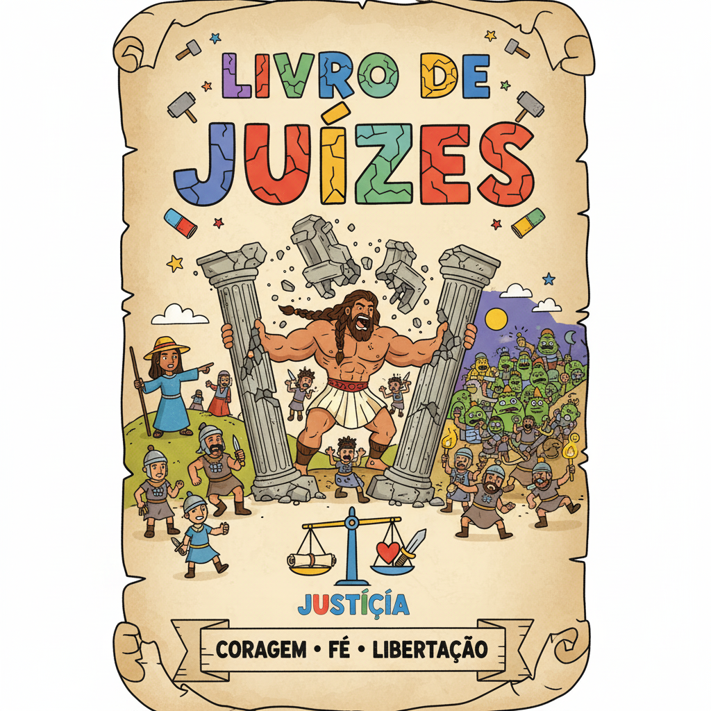
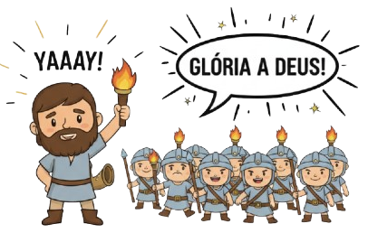

Heróis da Fé — Um Resumo Visual para Crianças
Quando o povo esquecia de Deus, sofria as consequências. Quando clamava por ajuda, Deus enviava um libertador! Esse ciclo acontece 7 vezes no livro — e cada vez Deus estava pronto para restaurar.
Gideão se escondia com medo, mas Deus o chamou de "homem valente". Com apenas 300 guerreiros, venceu um exército de 135.000! A força real não está nos músculos — está em confiar em Deus.
Uma mulher liderou o exército quando os homens hesitavam. Um jovem agricultor se tornou general. Um homem com força sobrenatural mostrou que o pecado enfraquece mais do que qualquer inimigo.
"O Senhor está contigo, homem valente!"
— Juízes 6:12
Gideão estava escondido com medo dos inimigos quando um anjo apareceu com essas palavras. Deus não via Gideão como ele era — via quem ele podia ser com a ajuda divina! Deus faz o mesmo com você.
Quando tiver medo, lembre: Deus te chama de corajoso!
A batalha não é sua — é de Deus. Confie Nele!
Com Deus ao teu lado, você é mais forte do que imagina!
A única juíza mulher de toda a Bíblia hebraica — e também profetisa. Quando Baraque hesitou em ir à batalha, ela liderou o exército pessoalmente e garantiu a vitória!

Estava escondido com medo quando Deus o chamou de "homem valente". Com apenas 300 guerreiros, vasos de barro e tochas, derrotou um exército de 135.000 inimigos!
O juiz mais famoso, com força sobrenatural ligada ao seu cabelo consagrado a Deus. Sua maior fraqueza não era Dalila — era o pecado que o afastava de Deus.
O povo se afastava de Deus → era oprimido pelos inimigos → clamava por ajuda → Deus enviava um juiz libertador → o povo vivia em paz → esquecia de Deus novamente. Esse ciclo aparece sete vezes!
Débora, profetisa e juíza, convocou Baraque para batalhar contra Sísara, general de um poderoso exército inimigo. Quando ele hesitou, ela foi junto — e a vitória final ficou com uma mulher!
Deus mandou Gideão reduzir o exército de 32.000 para apenas 300 homens — para que todo o povo soubesse que a vitória era de Deus, não da força humana. Com vasos de barro, tochas e cornetas, o inimigo fugiu em pânico!
Sansão nasceu consagrado a Deus como nazireno. Matou um leão com as mãos nuas! Mas o pecado foi enfraquecendo-o. No fim, cego e acorrentado, pediu força a Deus e derrubou o templo dos filisteus — vencendo na morte mais do que em vida.
🔢 O ciclo acontece 7 vezes!
Sete vezes o povo esqueceu de Deus, foi oprimido, clamou e foi libertado. Na Bíblia, 7 é o número da completude — como se Deus estivesse dizendo: "Não importa quantas vezes você caia, Eu estou aqui!"
⚔️ 300 vs 135.000!
Deus mandou Gideão dispensar 31.700 soldados antes da batalha. Por quê? Para que ninguém pudesse se gabar de ter vencido com força própria. A vitória impossível seria prova do poder de Deus!
✝️ Sansão prefigura Jesus!
Sansão morreu com os braços abertos, derrubando o templo e vencendo os inimigos na própria morte — assim como Jesus morreu na cruz de braços abertos e venceu o pecado e a morte para sempre!
Por que o povo de Israel ficava esquecendo de Deus mesmo depois de ser salvo? Você já se esqueceu de agradecer a Deus por algo bom que aconteceu na sua vida?
Gideão tinha medo e se achava fraco, mas Deus o chamou de "homem valente". Você acha que Deus pode te usar mesmo quando você se sente pequeno ou com medo?
Todos os juízes tinham defeitos e fraquezas. O que isso te diz sobre como Deus escolhe as pessoas para fazer coisas grandes?
Esta semana, toda vez que Deus te ajudar em algo, pare e agradeça na hora! Não deixe para depois. Quebre o ciclo do esquecimento com gratidão.
Escolha UMA coisa que você tem medo de fazer e peça a Deus coragem para enfrentá-la. Lembre: Deus te chama de "valente" mesmo quando você se sente pequeno!
Leia a história de Gideão e seus 300 em Juízes 7. Como Deus usou uma estratégia impossível para mostrar que Ele é quem dá a vitória?
Trilho Kids | Desenvolvido com ❤️ para crianças © 2025